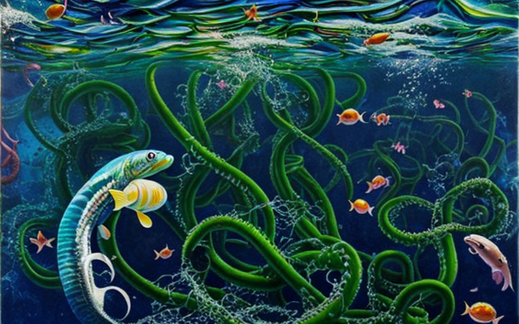
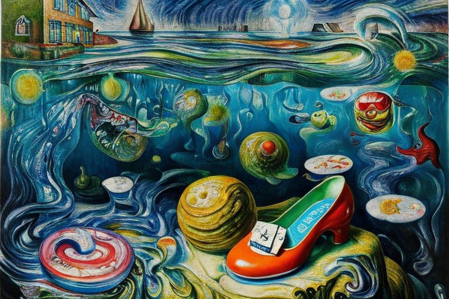
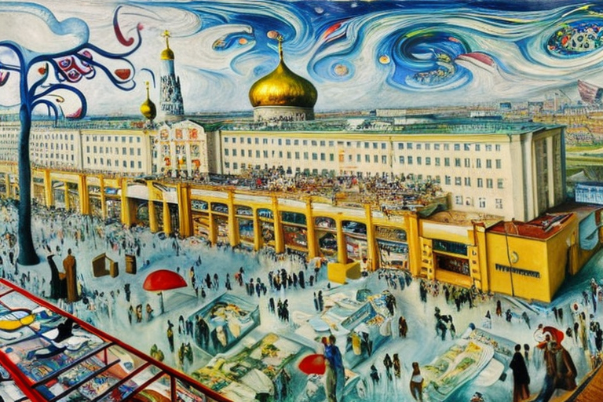
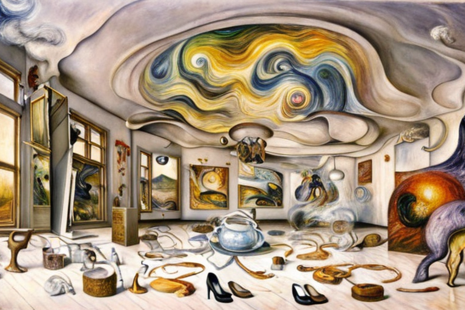
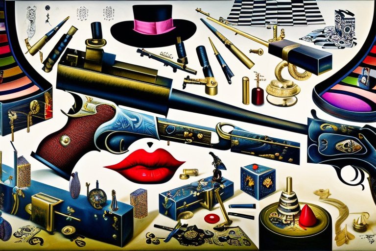

Τα παπούτσια μυξιχθύος και τα ατυχήματα
Αρχική Σελίδα
Πίνακας Περιεχομένων
Η διάδοση της μόδας

Ήταν η κυριαρχούσα συζήτηση στον κόσμο της μόδας, ένα νέο ύφασμα, που όμοιο του δεν είχαν ξαναδεί. Φτιαγμένο από τις γλοιώδεις εκκρίσεις του μυξίχθυος, ενός πρωτόγονου και υβρισμένου πλάσματος της βαθειάς θαλάσσης, αυτό το ημιδιαφανές, αλεξίσφαιρο υλικό υποσχέθηκε να φέρει επανάσταση στον τρόπο ένδυσης.
Η ιστορία του υφάσματος απο μυξιχθείς ξεκίνησε στην υφαντουργία μιας σχεδιάστριας μόδας, της Μίριαμ Γιάκομπς. Είχε γοητευτεί από την ικανότητα του μυξιχθύος να παράγει μύξα ως αμυντικό μηχανισμό και αναρωτήθηκε αν αυτή η μύξα θα μπορούσε να μετατραπεί σε ύφασμα. Μετά από χρόνια έρευνας και πειραματισμών, τελικά τα κατάφερε.
Το ύφασμα που προέκυψε ήταν ένα θαύμα. Ήταν ελαφρύ, αναπνεύσιμο, όπως και ανθεκτικό. Μπορούσε να σταματήσει μια σφαίρα κατά την κρούση, αλλά εξακολουθούσε να επιτρέπει στον ενδυτή να κινείται με ευκολία. Και ήταν ημιδιαφανές, δίνοντάς του μια μελλοντική, απόκοσμη εμφάνιση.
Καθώς διαδόθηκαν τα νέα για το ύφασμα μυξιχθύος, οίκοι μόδας και διάσημοι σπρώχνονταν για να το αποκτήσουν. Ήταν το απόλυτο σύμβολο μόδας, ένας τρόπος για να επιδείξει κανείς τον πλούτο και το γούστο του.
Καθώς όμως το ύφασμα γινόταν όλο και πιο δημοφιλές, άρχισαν να συμβαίνουν περίεργα πράγματα. Οι άνθρωποι που φορούσαν τα ρούχα μυξιχθύος ανέφεραν ότι ένιωθαν μια αίσθηση ανησυχίας, μια υφέρπουσα αίσθηση ότι κάτι δεν πήγαινε καλά. Και μετά άρχισαν τα ατυχήματα.
Αρχικά, θεωρήθηκαν ως απλές σύμπτωσεις. Μια γυναίκα που φορούσε το φόρεμα του ψαριού έπεσε από τις σκάλες και έσπασε το χέρι της. Ένας άνδρας επίσης που φορούσε γιλέκο μυξιχθύος χτυπήθηκε από αυτοκίνητο και επέζησε από θαύμα.
Η τελευταία λέξη της μόδας

Τώρα, όλοι ξέρουμε ότι ο μυξιχθύς είναι ένα γλοιώδες ψάρι, σωστά; Οπότε είναι απολύτως λογικό κάποιος να σκεφτεί, “Ε, ας φτιάξουμε παπούτσια από αυτή την γλιστερή μύξα!”
Και έτσι οι προτιμήσεις παραλλάχθηκαν. Η μόδα με τα υφάσματα μυξιχθύος έσβηνε σιγά σιγά, αλλά κάποιοι τολμηροί και απερίσκεπτοι σχεδιαστές μόδας είχαν ακόμα βέλη στη φαρέτρα τους για το υλικό αυτό. Ήθελαν να δημιουργήσουν παπούτσια που δεν ήταν μόνο αλεξίσφαιρα, αλλά και κομψά.
Αλλά επιτρέψτε μου να σας πω, δεν ήταν εύκολο κατόρθωμα. Η γλοιώδης φύση του ψαριού καθιστούσε σχεδόν αδύνατο να πατήσουν σταθερά αυτά τα παπούτσια σε μπετόν χωρίς να γλιστρούν σε κάθε στροφή. Οι άνθρωποι έπεφταν δεξιά κι αριστερά, έσπαζαν τους αστραγάλους τους και έβριζαν την ώρα και στιγμή που έπεσαν τα μάτια τους σε αυτά τα καταραμένα παπούτσια.
Αλλά η βιομηχανία της μόδας είναι αδίστακτη. Δεν επρόκειτο να αφήσουν κάτι όπως η κοινή λογική και η ασφάλεια να σταματήσουν μια νέα και δημοφιλή μόδα. Και έτσι συνέχισαν ακάθεκτοι, δημιουργώντας παπούτσια που ήταν πιο γλιστερά και από λαδωμένο γουρούνι στον πάγο.
Τα παπούτσια μυξιχθύος αποτέλεσαν μία κορυφαία επιτυχία. Οι διασημότητες πατούσαν επι πτωμάτων για να τα αποκτήσουν στα χέρια τους, παρά τον υψηλό κίνδυνο τραυματισμού. Οι άνθρωποι ήταν πρόθυμοι να διακινδυνεύσουν τη ζωή τους και να θραύσουν τα άκρα τους για να εμφανιστούν με αυτά τα παπούτσια, να περπατούν στο δρόμο σαν να ωσάν να πατούν στον αέρα.
Αλλά όπως συμβαίνει μερικές φορές, τα παπούτσια μυξιχθύος είχαν μια σκοτεινή πλευρά. Οι άνθρωποι άρχισαν να εξαφανίζονται, τα σώματά τους δεν βρέθηκαν ποτέ. Άρχισαν να διαδίδονται φήμες ότι τα παπούτσια ήταν κατά κάποιο τρόπο υπεύθυνα, ότι έσερναν ανθρώπους κάτω στα βάθη της γης. Κανείς δεν ήξερε με σιγουριά τι συνέβαινε, αλλά ο φόβος ήταν έκδηλος.
Η επιδημία των τραυματισμών

Επιτρέψτε μου να σας πω, αυτά τα παπούτσια ήταν ένας εφιάλτης και για τον κλάδο της υγείας. Ήταν σαν πανούκλα, σκορπούσαν χάος και καταστροφή όπου κι αν πήγαιναν.
Οι άνθρωποι έμπαιναν στα νοσοκομεία δεξιά και αριστερά με σπασμένα κόκαλα, διαστρέμματα και κάθε είδους τραυματισμούς. Ήταν σαν βγαλμένα από ταινία τρόμου. Αλλά η μόδα ήταν ασταμάτητη.
Τα παπούτσια μυξιχθύος ήταν τόσο γλιστερά και γλοιώδη που έκαναν τους ανθρώπους να γλιστρούν και να πέφτουν με ανησυχητική συχνότητα. Δεν είχε σημασία αν περπατούσαν στο δρόμο ή αν ανέβαιναν μια σκάλα, αυτά τα καταραμένα παπούτσια τους σαβούριαζαν κάθε φορά.
Και οι τραυματισμοί δεν ήταν αστείοι. Μιλάμε για σπασμένα κόκκαλα, σχισμένους συνδέσμους και κάθε είδους δυσάρεστες μελανιές. Οι άνθρωποι περνούσαν εβδομάδες, ακόμη και μήνες, στο νοσοκομείο μέχρι να συνέλθουν από τους τραυματισμούς των παπούτσιών.
Ήταν μια μαύρη εποχή. Τα νοσοκομεία κατακλυσμένα με ασθενείς, οι γιατροί και οι νοσοκόμες εργάζονταν όλο το εικοσιτετράωρο και οι τραυματισμοί συνέχιζαν να αυξάνονται. Ήταν σαν τα παπούτσια μυξιχθύος να κυριεύονται από κάποιου είδους κακόβουλη δύναμη, αποφασισμένη να προκαλέσει τον όλεθρο σε όποιον ήταν αρκετά ανόητος για να τα φορέσει.
Η σταυροφορία της Μάφι ΜακΚουίν

Παρά το χάος και την καταστροφή που προκλήθηκε από τα παπούτσια μυξιχθύος, υπήρχαν ακόμα μερικοί σκληροπυρηνικοί οίκοι μόδας ορκισμένοι στις στυλιστικές τους ιδιότητες. Ένα τέτοιο σύμβολό μόδας ήταν η διαβόητη Μάφφι Μακκουίν.
Η Μάφφι ήταν πασίγνωστη στον κόσμο της μόδας, για το αλάνθαστο μάτι της, ως προς τις τελευταίες τάσεις και μια μοναδική αίσθηση της μόδας. Και όταν είδε αυτά τα παπούτσια μυξιχθύος, ήξερε τι προοπτικές διανοίγονται για πωλήσεις.
«Αγαπητές μου, πρέπει να δοκιμάσετε αυτά τα παπούτσια μυξιχθύος», φώναξε με την μελωδική φωνή της στον οίκο μόδας της. “Είναι απολύτως θεϊκά! Τόσο απαλά και ανάλαφρα, που θα νιώθετε σαν να περπατάτε πάνω στα σύννεφα.”
Και δεν είχε άδικο. Η γλίτσα μυξιχθύος ήταν ένα θαύμα της φύσης, ένα μαλακό και μεταξένιο υλικό που ήταν απίστευτα ελαφρύ και εύκολο στην εργασία, μια ασυναγώνιστη αλλαγή στη βιομηχανία της μόδας.
Όμως, όπως γνωρίζουμε, τα παπούτσια μυξιχθύος δεν ήταν χωρίς τη σκοτεινή τους πλευρά. Και για κάθε μοδάτη όπως η Μάφφι που θάμπωναν με τις στυλιστικές τους επιλογές, υπήρχαν δέκα ακόμη άνθρωποι που βλαστημούσαν σπασμένα κόκκαλα και όνειρα θρύψαλλα.
Ωστόσο, η Μάφφι αρνήθηκε να υποχωρήσει. Συνέχισε να φοράει με περηφάνια τα παπουτσάκια της, πατώντας στην πασαρέλα σαν βασίλισσα. Και για λίγο, φαινόταν ότι ο κόσμος ήταν έτοιμος να ξεχάσει τους κινδύνους και να αγκαλιάσει την ομορφιά αυτών των απίστευτων παπουτσιών.
Αλλά όπως ξέρουμε, το παρελθόν έχει τον τρόπο να μας στοιχειώνει. Και για όσους αγνόησαν τα προειδοποιητικά σημάδια, οι συνέπειες ήταν τραγικές. Τα παπούτσια μυξιχθύος ήταν μια υπενθύμιση ότι μερικές φορές, το στυλ μπορεί να έχει τρομερό κόστος.
Το δίδαγμα της ασφάλειας

Τελικά, η κυβέρνηση χρειάστηκε να παρέμβει. Εξέδωσαν μια ανάκληση για όλα τα παπούτσια μυξιχθύος και απαγόρευσαν το υλικό να χρησιμοποιείται ξανά στα υποδήματα. Όμως η ζημιά είχε ήδη γίνει.
Καθώς το χάος που προκαλούταν από τα παπούτσια μυξιχθύος συνεχίζοταν, οι μυστικές υπηρεσίες σε όλο τον κόσμο άρχισαν να δραστηριοποιούνται. Υπήρχαν αναφορές για συμμορίες του οργανωμένου εγκλήματος που χρησιμοποιούσαν το γλιστερό και γλοιώδες υλικό για να δημιουργήσουν υποδήματα που τους επέτρεπαν να διαπράττουν εγκλήματα με ευκολία, ξεγλιστρώντας από τον τόπο του εγκλήματος προτού προλάβει κάποιος να τους συλλάβει.
Ήταν ένα εφιαλτικό σενάριο και ήταν ξεκάθαρο ότι κάτι έπρεπε να γίνει. Η κυβέρνηση προσπάθησε να συγκροτήσει μια ομάδα κρούσης για να καταπολεμήσει το κύμα εγκληματικότητας, το πηγάζων των παπουτσιών μυξιχθύος, αλλά ήταν μια δύσκολη μάχη.
Καθώς τα εγκλήματα συνέχιζαν να αυξάνονται, η αξία των παπουτσιών μυξιχθύος στον κόσμο της μόδας άρχισε να μειώνεται. Οι άνθρωποι δεν ήταν πλέον διατεθειμένοι να ρισκάρουν μια ζωή και ένα ποδάρι για χάρη του στυλ. Ήταν ένα δύσκολο μάθημα, αλλά απαραίτητο.
Η μόδα πρέπει να είναι ασφαλής, πάνω απ’ όλα. Πρέπει να βελτιώνει τις ζωές μας, όχι να τις θέτει σε κίνδυνο. Και ενώ τα παπούτσια μυξιχθύος ήταν ένα θαύμα μηχανικής και σχεδίασης, ήταν τελικά μια αποτυχία όσον αφορά την ασφάλεια.
Ήταν ένα μάθημα που ο κόσμος της μόδας δεν θα ξεχνούσε σύντομα. Ο κλάδος άρχισε να μετατοπίζει την προσοχή του μακριά από επικίνδυνες μόδες και τάσεις, προς υπεύθυνες και βιώσιμες πρακτικές.
Τα παπούτσια μυξιχθύος κατεγράφηθησαν στην ιστορία, ως μια προειδοποιητική ιστορία για τις μελλοντικές γενιές. Και ενώ αποτελούσαν πηγή χάους και καταστροφής, τελικά εξυπηρέτησαν έναν μεγαλύτερο σκοπό, να μας υπενθυμίσουν ότι οι τάσεις της μόδας δεν πρέπει ποτέ να κυριαρχήσουν εις βάρος της ασφάλειας και της ευημερίας μας.